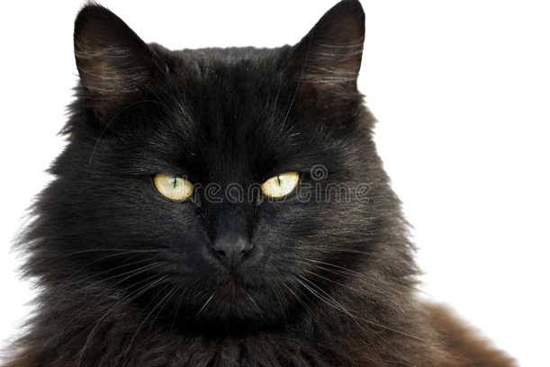

that is what
i like
paws, sharp claws, and two perky ears which are very sensitive to sounds. It has a tiny body covered with smooth fur and it has a furry tail as well. Cats have an adorable face with a tiny nose, a big mouth and a few whiskers under its nose
view all cats
